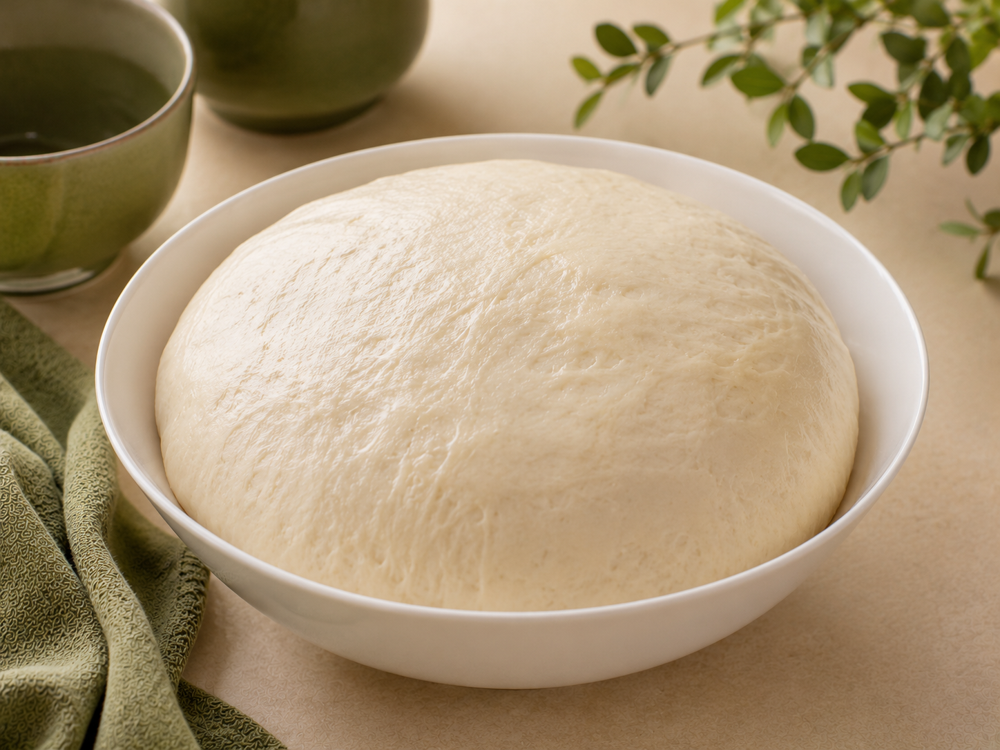

خمیر جادویی
آغاز خلاقیتهای خوشمزه با BoBo
خمیر جادویی BoBo یک خمیر همهکاره با بافتی نرم، لطیف و خوشخوراک است که پایهای عالی برای تهیه انواع غذاها و نانهای خانگی محسوب میشود. تنها با افزودن چند ماده ساده، خمیری آماده کنید که برای پیتزا، پیراشکی، رولهای شور، نانهای کوچک و خلاقیتهای آشپزی شما مناسب است. بافت کشسان و لطیف این خمیر کمک میکند تا هر بار نتیجهای خوشمزه و حرفهای، درست در آشپزخانه خانه داشته باشید.
وزن بسته: ۵۰۰ گرم
زمان آمادهسازی: حدود ۱۵ دقیقه
زمان استراحت خمیر: ۶۰ تا ۹۰ دقیقه
دمای پیشنهادی پخت: ۱۸۰ تا ۲۰۰ درجه سانتیگراد
نوع پخت: فر یا تابه یا سرخکردنی
خروجی: حدود ۸۰۰ تا ۹۰۰ گرم خمیر مناسب برای ۲ پیتزای متوسط یا ۱۲ تا ۱۵ پیراشکی متوسط
مواد لازم جهت اضافه کردن:
جهت ثبت سفارش به صفحات ما در پیامرسانهای اینستاگرام، تلگرام، بله یا ایتا مراجعه نمایید
زمان آمادهسازی: حدود ۱۵ دقیقه
زمان استراحت خمیر: ۶۰ تا ۹۰ دقیقه
دمای پیشنهادی پخت: ۱۸۰ تا ۲۰۰ درجه سانتیگراد
نوع پخت: فر یا تابه یا سرخکردنی
خروجی: حدود ۸۰۰ تا ۹۰۰ گرم خمیر مناسب برای ۲ پیتزای متوسط یا ۱۲ تا ۱۵ پیراشکی متوسط
مواد لازم جهت اضافه کردن:
- تخم مرغ
- آب
- روغن مایع